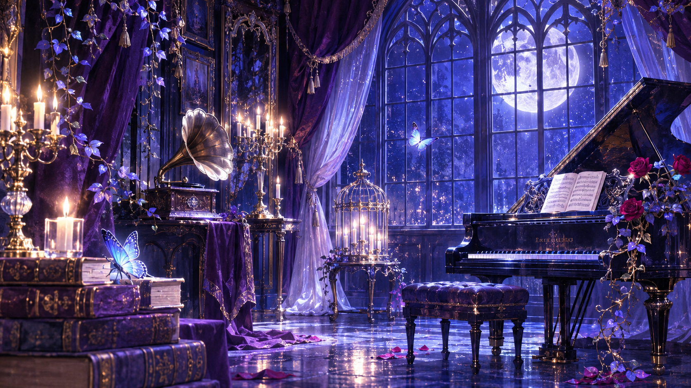

KAREN'S MUSIC ROOM
Melodies in the Moonlight
☾
月明かりにほどける音色
この歌が、あなたの帰り道を照らせますように。
ORIGINAL MUSIC
Songs from Karen's world
Karen Serubiaの世界で生まれた、オリジナル楽曲たち。

MUSIC POLICY
音楽を大切にするために
☾
掲載楽曲はKaren Serubiaのオリジナル作品です。 無断転載・再配布・無断利用を禁止します。